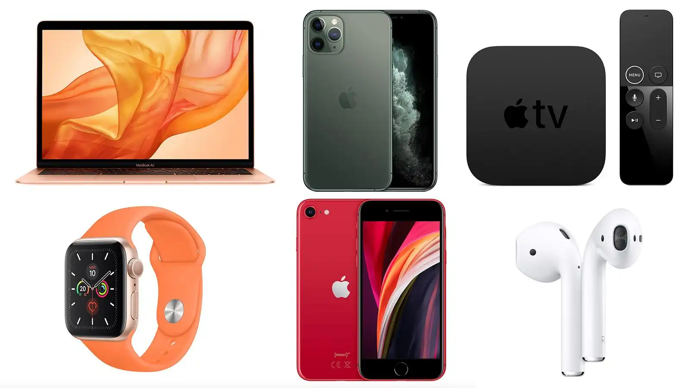
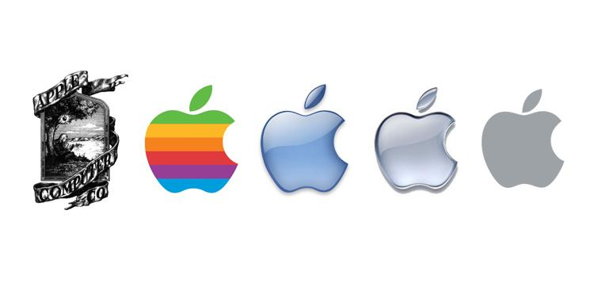
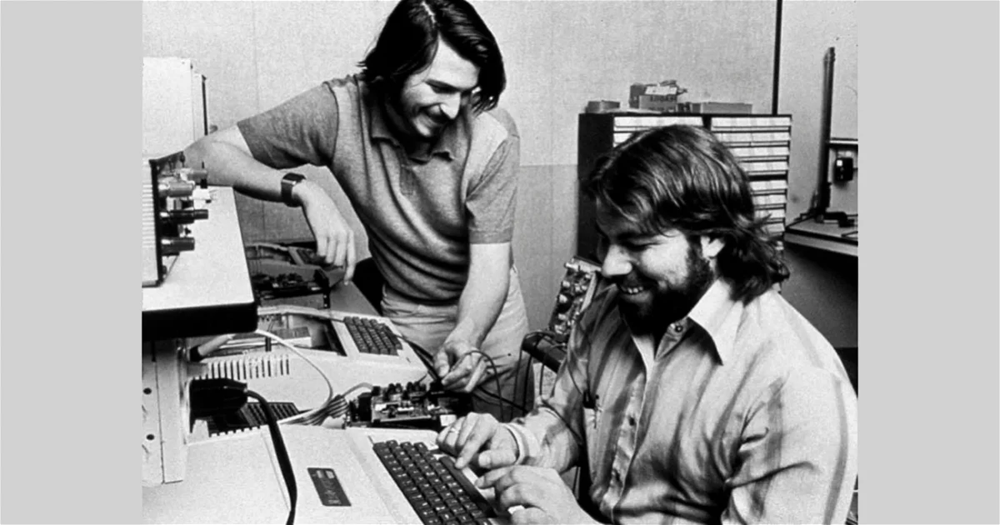
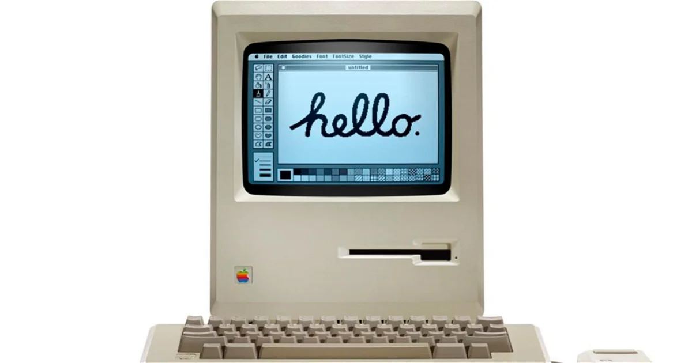
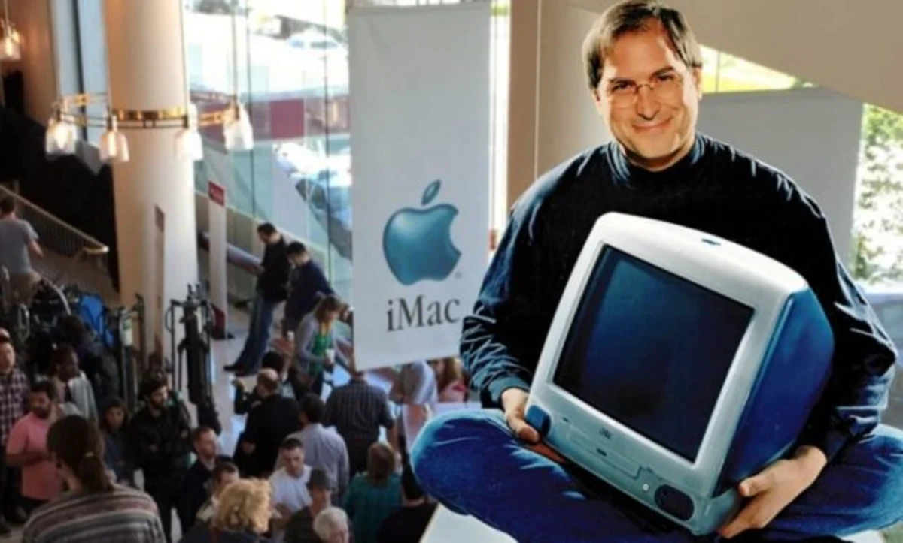

¿QUE ES LA APPLE?
Es una empresa tecnológica estadounidense que diseña y produce equipos electrónicos, software y servicios en línea. Tiene su sede principal en el Apple Park, en Cupertino (California, Estados Unidos) y la sede europea en la ciudad de Cork (Irlanda).Sus productos de hardware incluyen el teléfono inteligente iPhone, la tableta iPad, la computadora personal Mac, el reproductor de medios portátil iPod, el reloj inteligente Apple Watch, las gafas de realidad mixta y computación espacial Apple Vision Pro y el reproductor de medios digitales Apple TV. Entre el software de Apple se encuentran los sistemas operativos iOS, iPadOS, macOS, watchOS, visionOS y tvOS, el explorador de contenido multimedia iTunes, la suite iWork (software de productividad), Final Cut Pro X (una suite de edición de vídeo profesional), Logic Pro (software para edición de audio en pistas de audio), Xsan (software para el intercambio de datos entre servidores) y el buscador y navegador Web Safari.
La empresa operaba, en mayo de 2014, más de 408 tiendas propias en nueve países, miles de distribuidores (destacándose los distribuidores prémium o Apple Premium Resellers) y una tienda en línea (disponible en varios países) donde se venden sus productos y se presta asistencia técnica. De acuerdo con la revista Fortune, Apple fue la empresa más llamativa en el mundo entre 2008 y 2012
Ver más¿QUE ARTICULOS VENDE LA APPLE?
-Mac. es la línea de ordenadores personales diseñada,
desarrollada y comercializada por Apple Inc. En sus inicios fue una alternativa económica
y doméstica al Lisa, un avanzado microordenador empresarial, cuya línea de desarrollo fue absorbida por la línea Macintosh. El Mac terminó por convertirse en la línea estándar de desarrollo de los ordenadores de Apple, al desaparecer la línea evolutiva del Apple II.
Ipad. iPad es una línea de tabletas diseñadas y comercializadas por
Apple Inc. La primera generación fue anunciada el 27 de enero de 2010,
mientras que el 2 de marzo de 2011 apareció la segunda generación. Se sitúa en
una categoría entre un teléfono inteligente y una computadora portátil, enfocado más al acceso que a la creación de aplicaciones y temas.
Iphone.El iPhone dispone de cámara de fotos y un reproductor de música (equivalente al del iPod),
además de software para enviar y recibir mensajes de texto y de voz.
También ofrece servicios de Internet, como enviar, recibir y leer correo electrónico, cargar
páginas web y conectividad por Wi-Fi. La primera generación de teléfonos eran GSM cuatribanda con
la tecnología EDGE; la segunda generación incluía UMTS con HSDPA.; la sexta generación ya incluía 4G LTE.
La decimotercera generación comenzó a incluir soporte para redes 5G.
Watch. El reloj posee una corona digital que, aparte de cumplir una función estética
funciona para la respuesta háptica. Debido al pequeño tamaño de la pantalla es poco
práctico usar los gestos del resto de los dispositivos con pantallas táctiles de Apple.
El dispositivo cuenta con una pantalla de retina especial y flexible, con una protección
diferente para cada clase de reloj, que es capaz de detectar la presión ejercida sobre la
misma; por lo tanto, capta la diferencia entre pulsación y presión. A esta tecnología Apple la ha denominado "Force Touch", la cual, tiempo más tarde, pasó a llamarse
"3D Touch", debido a problemas de derechos de autor con Android.
Airpods.son auriculares Bluetooth lanzados por Apple en diciembre del 2016.
Además de reproducir música y responder llamadas, los AirPods tienen soporte para el
asistente digital de Apple, Siri, y una interfaz de usuario física.
Los AirPods Incluyen su propio Apple W1 SoC, cuyas funciones de conectividad adicionales
requieren los dispositivos que manejan iOS 10, macOS Sierra, watchOS 3, o posteriores.
Se sincronizan automáticamente a través del servicio Apple iCloud, permitiendo a los usuarios intercambiar fuentes
de audio a otros dispositivos conectados mediante el mismo Apple ID.
También pueden funcionar como audífonos Bluetooth estándar al ser conectados a cualquier
dispositivo que soporte Bluetooth 4.0 o superiores, incluyendo dispositivos de Android.
AirTag.te ayuda a encontrar tus cosas muy fácilmente. Ponle uno a tus llaves y otro a tu mochila
para que siempre puedas ver su ubicación en la app Encontrar. Además, esta app también te permite localizar tus
dispositivos Apple y mantenerte en contacto con tus familiares y amistades.
EVOLUCION DE LA APPLE
La primera etapa de Apple como empresa puede decirse que duró unos 6 años. Todo comienza cuando dos amigos llamados Steve, Jobs y Wozniak, decidieron crear y vender una placa de circuito que sería llamado Apple I. Jobs y Wozniak tuvieron que vender varias pertenencias para poder financiar su proyecto.
El Apple I vendió unos 200 unidades a un precio de 666,66 dólares, pero no fue un proyecto rentable que hiciera crecer, económicamente hablando, a Apple. La inversión de 250.000 dólares de Mike Markkula hizo posible la creación de Apple II, lanzado a mediados de 1979. Este sí fue un gran éxito para Apple y llevó a la compañía a su siguiente capítulo. Ver más
Etapa de crecimiento, 1982 a 1985
Los primeros años bajo el mandato de Sculley fueron buenos para Apple, aunque Jobs fue en muchos casos un problema. La compañía siguió creciendo y el Macintosh supuso la mayor revolución de la industria. El primer ordenador para el público general con una interfaz gráfica de usuario. Apple creció mucho durante este periodo, a pesar de tener rivales fuertes como IBM o Microsoft.
Sin embargo, la compañía no supo encontrar la forma de vender un gran producto como el Macintosh, que pasado su éxito inicial dejo de ser rentable. John Sculley y la junta directiva tomaron una serie de decisiones que no gustaron, como juntar a diferentes equipos de trabajo y o cancelar proyectos. Esto generó muchos problemas con Jobs, que terminó siendo despedido de la empresa que había fundado en 1985 tras un intento de "golpe de estado" para hacerse con el poder de Apple.
La era de la destrucción, 1985 a 1997
Esta es la peor época para Apple, una compañía sin rumbo, que perdió toda la ventaja en una década y que casi la lleva a la destrucción. Apple vendía el Macintosh con unos altísimos márgenes de beneficio, y eso comenzó a condenar a la compañía cuando aparecieron PCs clónicos que ofrecían gran parte de las funcionalidades del Macintosh.
A finales de los 80 y principios de los 90, todo parecía ir bastante bien. En 1991, Apple lanzo el Powerbook, un portátil que fue un autentico superventas. Introdujo System 7, una actualización que traía una interfaz a todo color.
Jobs llegó como asesor, pero apenas tardó unos meses en convertirse CEO interino tras
el despido de Gil Amelio. Jobs tomo muchas decisiones, eliminando la mayoría de
productos que estaban en desarrollo para centrarse en apenas un puñado de dispositivos.
El primero de ellos fue el iMac, lanzado en 1998 y diseñado por Jonathan Ive,
vendió 800.000 unidades en sus primeros cinco meses. Jobs comienza a ver el potencial
del software y decide hacer numerosas adquisiciones de las que nacen programas como Final
Cut Pro, iMovie, iTunes o iPhoto. Programas que solo funcionaban en los Mac y que daban un
motivo para comprarlos.

Puede decirse que en el año 2010, Apple comienza a convertirse en el gigante
tecnológico que es hoy en día. La compañía presentó ese año el iPad y el iPhone 4,
dos dispositivos adelantados varios años a sus competidores. Esa ventaja hizo que la
capitalización bursátil de Apple se disparara.
Sin embargo, la compañía comenzó a lanzar demasiados dispositivos al mercado, la gran mayoría sin ningún éxito. Cámaras digitales, consolas, PDAs como el Newton. Además, Microsoft lazó Windows con una interfaz gráfica similar a la del Macintosh, haciendo esta tecnología mucho más asequible.
Etapa de resurgimiento y expansión, 1997 a 2010
En esta época Apple lanza dispositivos geniales como los MacBook Pro, cambiando sus
procesadores por los de Intel, el iPod, que revoluciona la industria musical, y el iPhone,
que hace lo mismo en el mercado de la telefonía móvil. Apple crece como la espuma,
liderando en muchos mercados diferentes.
El gigante tecnológico, 2010 hasta la actualidad
Lamentablemente, en el año 2011, Steve Jobs fallecía dejando una Apple en su mejor momento. Sin embargo, Apple no puede decir que esta década le haya ido mal, se ha convertido en la compañía más valiosa del mundo y sigue lanzando dispositivos increíbles.
.gif)